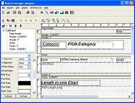

Report Manager
|
Descripción |
|
| Comprar | |
| Servidor Web | |
| Pantallas | |
| Documentación(inglés) | |
| Soporte | |
| Otros enlaces | |
Descripción de la aplicación
Report manager es una aplicación de generación de informes (Report Manager Designer) y un conjunto de componentes para Delphi , Builder y Kylix, también puede utilizarse desde otros entornos de desarrollo con el componente ActiveX incluído (Visual Basic,Visual FoxPro,cualquier lenguaje de Visual Studio.Net...)
|  |
|
 |
Incluye un Servidor de informes TCP , a través del cual los clientes obtienen informes procesados en el servidor. También se incluye un completo servidor web de informes, generando archivos Adobe PDF al vuelo.Un potente servidor de informes de red sin pago de licencias .
Comprar
Puede adquirir el producto oficial y otros servicios.
Licencia
Report Manager es un producto opensource bajo el modelo MPL(inglés), (se incluye permiso de uso en aplicaciones GPL), por lo que puede usarlo en sus aplicaciones comerciales, pero cualquier mejora introducida en el motor de impresión debe ser publicada bajo esta licencia.
Resumen de características
Funciona en Windows y Linux, Pude distribuir el diseñador de informes, con esto consigue la modificación de informes sin modificar (recompilar) su aplicación, el resultado puede ser guardado como un archivo con formato Adobe PDF.
Report Manager dispone de múltiples características(inglés), incluyendo algunas exclusivas como varios subinformes en una página, metaarchivos, fuentes de impresora, secciones externas y subinformes hijos (subinformes en cascada).
Si utiliza Delphi/Kylix/Builder, puede incluir el motor de informes en sus ejecutables, sólo añade 90K, incluye presentación preliminar, diálogo de impresión, opciones del informe...
Versión actual
La versión actual es la 1.3, instalable en Delphi 5E,Delphi 6PE, Delphi 7DEA, Kylix 2OPE, Kylix 3PE (C++ and Delphi), Builder 4E,y ActiveX, pero debería instalarse también en Kylix 1PE, Builder 5E, Builder 6PE, y Delphi 4E..., puede instalarse también en Kylix Open Edition junto a FreeCLX.
Todas las funcionalidades planeadas fueron implementadas en la version 1 incluyendo gráficos, codigos de barra...
La siguiente revisión (1.4) puede contener algunas novedades como:
- Diseñador mejorado
- Bibliotecas de informes
Para una descripción detallada diríjase a la lista de características(inglés).
Visite también la Documentación(inglés) y preguntas más frequentes, F.A.Q.(inglés)